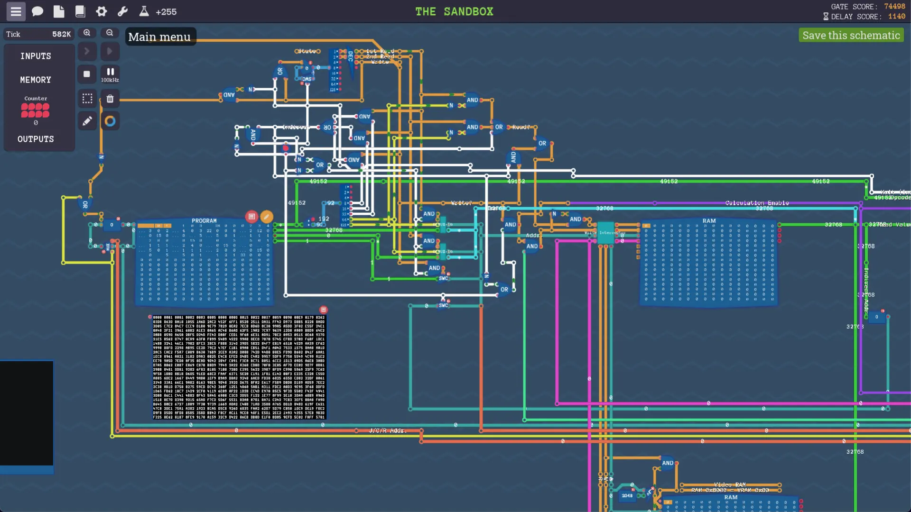
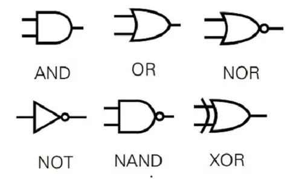
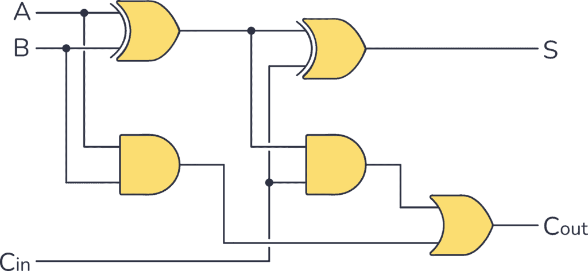
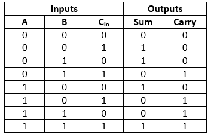
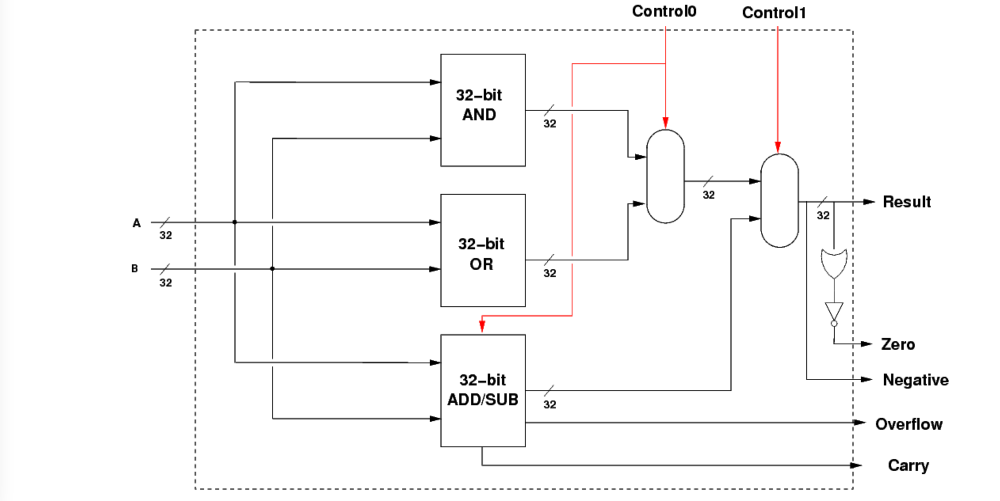
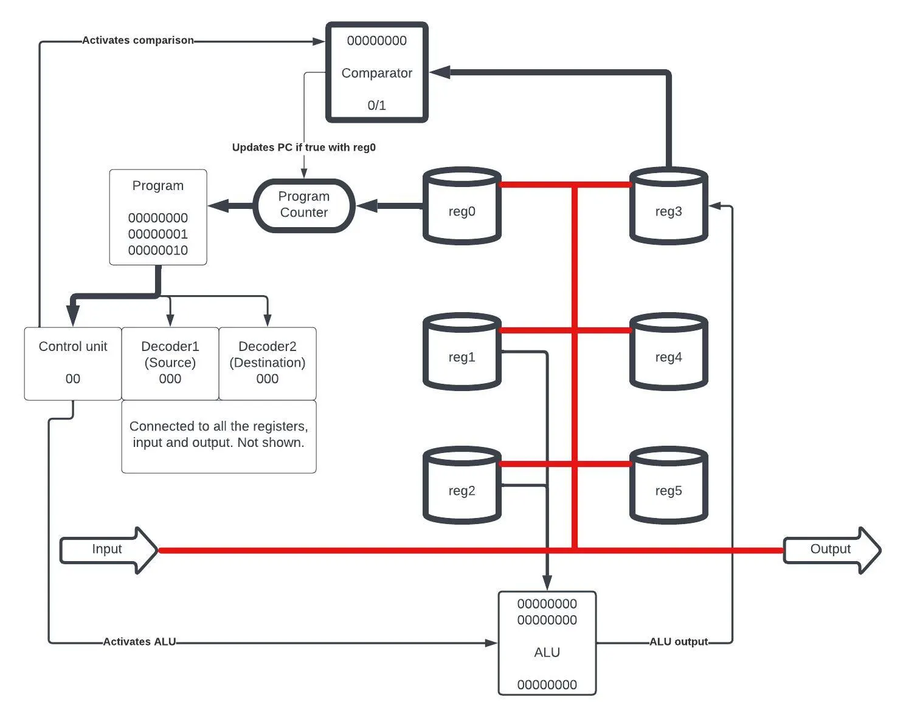
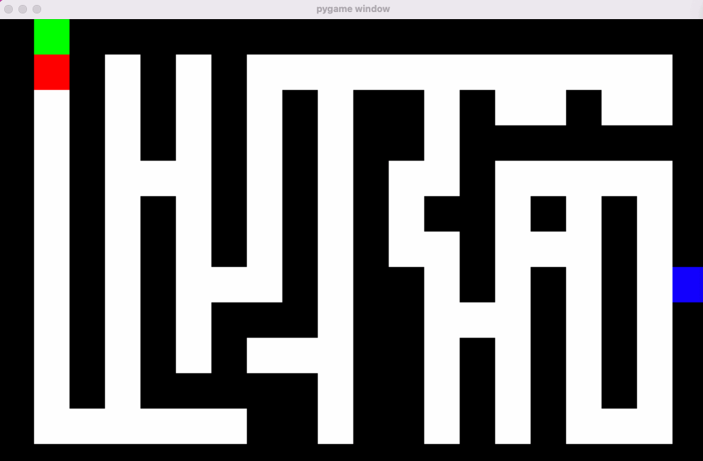

(2024-12-07) Note: See this blogpost of mine to interact with the CPU and solve the maze.
Introduction
A while back, I came across an interesting game on Steam called Turing Complete. The objective of the game is to design a Turing complete CPU from scratch, and it guides players through each step of the process. Starting with the basics of logic gates, the building blocks of a CPU, players tackle progressively more complex challenges until they reach the point of designing their own CPU capable of performing simple tasks. I found the game captivating and spent an unhealthy amount of time in it.

After completing the game, I decided it would be fun to create a Python emulator for a similar CPU. While it's relatively easy to make a basic emulator in Python due to its high-level nature, I chose a different approach. I wanted to build the CPU entirely from scratch, deriving the logic from the fundamental functionality of logic gates. This means that the CPU's performance is determined solely by simple true/false comparisons, without relying on if statements or other control flows. It does make the code a bit harder to read at times, but by merely changing the function of a single logic gate, you can witness how the entire CPU's behavior is affected (spoiler alert: it stops working).
Logic Gates
The design starts with the logic gates. Here is an excerpt of the code
def and_(*args:bool)->int:
return int(all(args))
def or_(*args:bool)->int:
return int(any(args))
def not_(*args:bool)->int:
return int(not all(args))The logic gates perform simple comparisons and return true or false values. For example the AND gate returns true only if both of its inputs are true. The OR gate returns true if either (or both) of its inputs are true.

Basic Components
Once we have our logic gates, we can utilize them to create essential components. Let's focus on the full adder as an example. The purpose of a full adder is to take two binary inputs and perform addition on them. For instance, when adding 0 + 0, the output is 0. When adding 1 + 0, the output is 1.
However, adding 1 + 1 poses a challenge. In binary, we lack a way to represent the number 2 directly. To address this, we introduce a carry bit, similar to carrying over a digit when adding two decimal numbers that exceed 9. Additionally, we have a carry input to account for any carry bits from previous additions.

A truth table is a structured table that presents the outputs corresponding to all possible input combinations. It allows us to systematically analyze the behavior of a component or system under consideration. In the case of a full adder, the truth table would display the sum output and carry output for each potential combination of binary inputs and carry input. By checking the truth table, we can see how the full adder operates under different input scenarios.

The above design can now be implemented in code, using the logic gates we have created previously. In this case I first made a half adder (which doesn't have a carry in) and used two of them to construct a full adder. Notice how all the logic is dependent on the operation of the logic gates.
def half_adder(input1:bool, input2:bool):
return sn(
sum=xor(input1, input2),
carry=and_(input1, input2)
)
def full_adder(input1:bool, input2:bool, carry_in:bool):
half_adder1 = half_adder(input1, input2)
half_adder2 = half_adder(half_adder1.sum, carry_in)
out = sn(
sum=half_adder2.sum,
carry=or_(half_adder1.carry, half_adder2.carry)
)
return outAfter creating a number of basic components such as these, we create more complex components such as an ALU (Arithmetic Logic Unit). The task of the ALU is to perform simple mathematical operations, such as adding 2 numbers together. In this case the ALU can only perform 4 simple operations; Addition, Subtraction, and two logical operations AND and OR. I took inspiration from this 32 bit ALU design, although mine only has 8 bits.

The Full CPU
The design of the CPU includes six registers, an input, and an output, along with an ALU. Additionally, there is a unit that can carry out comparisons between a value and zero. The CPU operates by executing one of four distinct types of operations:
- Immediate: This operation is for moving a given value into register 0.
- Arithmetic: The operands for any arithmetic operation are always register 1 and register 2, and the resultant output is stored in register 3.
- Copy: This operation is used for duplicating values from one register to another or to the output. For example, 'copy 0 6' copies from register 0 to the output, and 'copy 5 3' copies from register 5 to register 3.
- Evaluation: This operation evaluates the value in register 3 against zero. If the condition is true, it sets the program counter to the value in register 0.

Using just these operations we have already created a turing complete CPU! However writing code for it would be challenging as we would have to write everything in binary. To solve this I made a simple assembler that converts assembly code to binary. It also adds a number of useful features such as labels. Labels allow you to mark a point in your program to jump to, making it much easier to create loops in your code. Let's take a look at a simple program.
# create a marker at the beginning of the program where we can jump to
label start
# read from input (reg6) into reg1
copy 6 1
# add reg 1 and 2, store the result in reg3
add
#copy result from reg3 into reg2
copy 3 2
# loop back to start if the value is not negative
start
eval >=
# Once the value overflows and becomes negative send the result to the output
copy 3 6In the simple program above, the value 1 is continuously being fed into the CPU. At each iteration we add it to the value stored in register 2, so that we increment the value by 1. Eventually the value grows large enough that it overflows and becomes negative. This is because in binary the most significant bit (MSB) is used to represent negative numbers. Once this happens the program stops running.
Solve the Maze
Now that we have a working CPU, we need something to do with it. So I designed a simple maze that a robot needs to navigate through. The robot can only see one square ahead, and is controlled by the CPU. In order to solve the maze, I implemented a simple algorithm - following the wall. Using this technique the robot is able to find its way through the maze.

# robot recognizes these commands:
# 1 = turn left
# 2 = turn right
# 3 = step forward
# To execute a command send the corresponding value to the output (reg 6)
# robot inputs (reg 6) to CPU:
# 1 = wall
# 0 = clear
start
eval always
### routines ###
label uturn
2
copy 0 6
copy 0 6
start
eval always
label right
2
copy 0 6
start
eval always
label left
1
copy 0 6
start
eval always
### start main loop ###
# take a step forwards
label start
3
copy 0 6
# check if wall to the left store in 3
1
copy 0 6
copy 6 3
2 # turn back to original direction
copy 0 6
# if no wall left, turn left until there is a wall. We follow wall on our left side
left
eval =
# there is a wall left, check ahead
copy 6 1
# check right
2
copy 0 6
copy 6 2
1
copy 0 6
# if wall ahead and right do a uturn
and
uturn
eval !=
# if wall ahead but no wall right turn right
copy 1 3
right
eval !=
start
eval always Conclusion
I thought this was quite a fun project, I certainly learnt a lot. While it may seem a little complicated, the truth is that by playing Turing Complete, you learn in a very intuitive manner. I can highly recommend it. If you want to write your own program or take a look at the code, it is all available on my github.
← Back to all posts